Assignment 2
COSC2083 - Introduction to Information Technology
IT World
Nguyễn
A Lũy (s3891919)

I declare
that in submitting all work for this assessment I have read, understood and
agree to the content and expectations of the Assessment declaration.
Table of Contents
I. Team Profile
II. Tools
III. Project
Ideas
IV. Feedback
V. IT
Technologies
VI. IT Work
VII. Reference
1.
Team
name.
Once forming a group I have already chosen a
fantastic name for my own team, as I recognize that the name reflects the
group's work, in which each member will have distinct skills and personalities.
When it came to the course name "Introduction to IT", the name
"Better Together" blew my mind because the primary objective of this
course is to learn about IT fields and build new friendships. Additionally, the
words has its own meanings, indicating that working alone will not produce
the results as great as we contribute and assist one another in a group.
Furthermore, each teammate would love to have their unique strengths in various
areas in order to help everyone achieve the highest level of productivity.
2.
Team
profile.
Following the completion of the three essential
personal tests in "My Profile", I discovered that they not only
provide me with clear insight into myself, but also help me recognize my
shortcomings and what aspects of my IT field needed to be strengthened.
Therefore, I can carefully decide team members for my group project with those
who want the same values, objectives, and achievements. As a consequence, each
of us can help and learn from each other's experiences. Specifically, I would
love to work under a team with a relaxing and easy-going environment and less
highly structured requirements from a leader. As a virtuoso, working in such an
expected environment will inhibit my creativity and imagination and reduce my
stress level, which could negatively influence the team projects. Moreover,
joining with teammates who have unique characteristics, including being
dedicated, responsible, and creative yet pleasant, would be a precious
opportunity for me to promote and absolutely exploit the potential aspects
myself. Besides, I know for sure that working in a responsible team, everyone
will have their own duty and separate work into small appropriate tasks for
individual who is good at that task.
Last but not least, I am myself a good listener, as
I discovered in the learning style test. I want to find a team with other types
of learners with aesthetics, precisely two visual learners and one writing and
reading learner due to some reasons. First of all, every kind of learner has
distinct methods to approach the lessons so that they can have different
perspectives to comprehend the knowledge. If there is any difficulty among
other members, we can explain and analyze the problem in many ways to get the
best out of it. Secondly, I believe that
visual learners would be a potential advantage to my team since they are able
to study things by sight, especially on pictures or screens. To be more
precise, once other teammates struggle with an issue, he can help them to
evaluate it through forming step-by-step analysis into a drawing picture to
understand easily. Finally, the writing and reading learner plays an integral
part of a powerful team, simply because he can convert other spoken ideas and
explanations into academic written ones. Therefore, the group work could be
straightforward and comprehensively delivered to the professor. Furthermore,
people with this learning style are good at researching and finding useful
online resources contributing to the projects.
For my proposed project, I will need a webpage
and a GitHub repository. So I made a GitHub repository, which can be
found here: (…), and the webpage that is uploaded through the repository
is also here: (…). Reflecting on the file in my GitHub repository, I can
reasonably believe that I did a good job of maintaining it clean as possible in
my contributions, and I did not make many updates, which will be
direct to follow my commits.
-
Overview:
When it comes to creating a game, my mind suddenly appears
to have an interesting idea to make a mobile game related to the fashion
industry on IOS and Android platforms. Since I have a strong passion for
playing stylish games before, such as Dress Up Fashion
Design Studio, Fashion Show: Dress Up, Makeup, Super Stylist, and LoveNikki.
Thanks to the development of technology and the emergence of online game
platforms years ago, I can stand a chance to make my desired hobby become
realistic.
-
Motivation:
I am the one who is really interested in the fashion
field, explicitly drawing and developing beautiful suits and gowns for both men
and women. Besides, fashion does not gain many competitive edges in the game
industry nowadays compared to role-playing and strategy games (Straits Research
2020). Therefore, I would be here to develop a stylish game with modern and
high-quality graphics and outstanding features, called "Fashion Stylist
Mobi" for those who share the same interest with each other. As a result,
game players can freely experience and enjoy their own passion for fashion
design, even though it would be a great starting point for fashion game
contribution in the future.
-
Tools
and Technologies:
Since many online games these days have been
published more and more on mobile devices due to the widespread use of portable
devices, smartphones, I would love to release a fashion game with the mainly
2.D model using the software called Unity. This is simply because Unity will
bridge the field of art, code, and design, then I can piece together different
level elements and build a fashion world myself. Moreover, under the support of
the C# coding language, which integrates perfectly with the game engine, I will
add the rules and structures, showing players how to interact with my creation.
In addition, I possibly stick my codes with the best software, Visual Studio
IDE, which allows me to establish a game by building a structure and editing
parts. Last but not least, some other open-source tools are also recommended to
use for this game development, particularly Git and Github. I would take full
advantage of utilising those tools to interact with my group, which help me
create a repository to pull and push the code from that.
-
Description:
There is a great number of features that I would
love to cover in the "Fashion Stylist Mobi", the core feature is that
transmitting an addictive dress-up experience for all passionate players
through high quality grahics and captivating stories of non-player characters.
The
figure represented for the high-quality graphics and player's characters in the game.
First and foremost, the users need to install the
game application into their mobile devices, then they will sign up the personal
accounts themselves simply by choosing username and password along with email
address, phone number verification, date of birth in
order to enhance the security step. After that, they can log in to the game to
enjoy many different functionalities from it. Firstly, a user is required to
choose his or her character fitting with their desired choice, and make their
own character name. Then, this created main character will discover a game plot
with a marvellous journey and a player will meet a lot of different NPCs of
diverse backgrounds and unravel intriguing mysteries in a stylish epic.
Secondly, we will design thousands pieces of clothing from Asian to European
cultures and many different kinds associated with the ancient and modern times
etc. Therefore, the player's wardrobe will be filled with elaborately designed
sets gained from participating in chapters, quests and special events that
admins created. The outfits which are always updated and incorporated into "Fashion
Stylist Mobi" are thoroughly designed and examined by our team. Next,
under such a fashion world, users feel free to dress up by their own style
outfits, hairstyles, makeup accessories and background options in their huge
wardrobe.
The follwing feature is that tailoring pieces of
clothing's colors personally, a player just need to collect the dyes to
customize his or her own desired clothes with different colors, which is used
design recipe and ingredient items to craft the new ones and upgrade the
originally simple suits into elegant and stunning ones. Following that, a
stimulating feature is the voting contest for the best worn dresses with the
chosen theme will be held. Over hundreds of thousands of gamers per styling
competition, the players are casted to vote and determine who is the hottest on
the scene. Are the other players' appearances five-star worthy, or did they
fall short? Last but not least, players can experience battles with diverse
stylists from all over the world to find out who has the best style and highest
score in a given theme. Specifically, a user character will wear the the
appropriate outfits which suit the given topics and equip listed skills in the
battle to gain an edge on road to become "Queen Stylist".
-
Skill
required:
In order to establish the game, programming is
considering the most crucial skill that developers must possess. In fact that
many coding languages are existing these days, but we just need to proficiently
use a few of them to make games, including C#, Javascript or Python, etc.
Secondly, we must master the game engine tools, specifically Unity, to interact
with code and design to release a beautiful and well-organized game. Finally,
this is a fashion game so designing fascinating drawings for lovely and
gorgeous suits plays an important role in enhancing the players' experience.
Therefore, carrying this project for further prominent development, we have to
enroll more human resources in the fashion field in the future. However, let
take the idea into account, it is just a very starting point of the whole
process, and at this moment, my team could take full charge of it.
-
Outcome:
If the "Fashion Stylist Mobi" become
successful and widely recognized in my country, I would take this precious
opportunity to improve the game to be the best version so as that the users can
sign up and enjoy their fullest potentials in the game world. Since the fashion
games are now not common, simply because the storyline and graphics are still
inadequate and inconvincible enough to this generation. Therefore, I strongly
believe my team as well as "Fashion Stylist Mobi" meet all the
necessary aspects and requirements from players including storyline, graphics
and experience. I hope that this game could leave a huge influence on artistic
community, later young generation and arousing the hobby and passion of those
who are interested in fashion design.
When I first came up with these ideas, I realized
that I would need many responses from a range of customers in order to
identify flaws with my product and know how to solve them. As a result, I have
asked for feedback on my project from my teammates and they all
had various perspectives on the topic.
1.
Do
Quang Thang and Nguyen Minh Thuan said: "this project is painstakingly developed and
contains a lot of suitable features. However, you should create some aditional
features in this games such as the recharge functions or top-up functions to
players".
2.
Nguyen
Phan Yen Thanh said: "Your initial ideas are persuasive and your motivation is strong enough
to create such a great work like that. Yet, you should add a function called
the forum chat for everyone to talk together that could make the game
captivating".
One teammate advises that because my project is
developing an online game, some more fascinating elements, such as recharge
functions and top-up features, and other game-specific features, should be
added to make it more realistic and appealing to players. He argues that
because online games are becoming increasingly competitive for players, the
description of specific roles could assist gamers
better grasp the game and grow their interest in it. To be honest, I'd be
grateful for his opinion on my intended concepts, and indeed, I
have already considered these features, but this is still a
beginning game project, and if it can evolve further in specific
areas, I'll provide all conceivable features in it.
Another wonderful suggestion she made was to create
a forum chat where individuals from all around the world could communicate
about their experiences and hobbies with each other. A forum conversation also
connects players and fosters new relationships, making the game more enjoyable
and drawing more attention. I woul like to express my gratitude for her
suggestion, which is considered one of the most intriguing aspects of the
gaming industry today.
Natural
Language processing and chatterbots
Some people may struggle to understand the game's features
and functionalities (not just "Fashion Stylist Mobi," but many others
as well), and they may require assistance from the administrators. However, if
the admins aren't available, how will they obtain help? So, I have came up
with the concept of adding a chatterbot to "Fashion Stylist Mobi" in
order to improve the user experience. In fact, there are also plenty of
benefits that chatterbots may provide to players right now. The primary
objective for including chatbots in the game is to provide developers and
gamers with the strongest quality in-game support. Unlike traditional help,
nonetheless, this program employs machine learning techniques to infuse the
game with the human logical reasoning required to play it effectively.
Furthermore, human support is inadequate for the enthusiastic generation that
is frequently playing games. Gaming chatbots are powered by AI to provide 24/7
customer service, rapid responses, and cheaper operating costs.
Although the chatterbot is ubiquitous but not
sophisticated at this time, I am certain that it will play a significant role
in the development of chatbots in the coming years. It's likely that everyone
will have a chatbot assistant who will assist them on a daily basis. Chatbots
are expected to be used by an increasing number of various firms in the future
due to its numerous applications, not only in the gaming industry but also in
other ones. For example, the banking and finance business is at the forefront
of AI and chatbot advancements, looking for more safe ways to ensure security
and truth while dealing with rapidly rising customer bases that expect
immediate assistance and answers to their questions. Next, the hospitality
industry is anticipated to strike a balance between personalization and
the benefits of automation, chatbots, and virtual assistants. From increasing
service quality to delivering additional in-room and beyond-the-foyer amenities
to enhance a customer's experience, hotels are turning to bots to answer common
questions quickly and without the latency that traditional services have.
Finally, the chatbot has a significant impact in the healthcare sector.
Chatbots and online doctors can be found in many areas of the healthcare field,
as well as in pre-primary applications and services, providing individualized
answers to common health questions. Medical developers, on the other hand, are
needed to create chatbots that bridge the trust gap between many patients and
automation services. Building trust with bots requires the use of user-friendly
interfaces, menus with graphics for kids, and the development of non-technical
language alternatives. Furthermore, any chat must properly describe the
privacy, security, and legal considerations that surround it.
Since its inception, artificial intelligence has demonstrated
a significant interest in a wide range of businesses around the world, and AI
has completely transformed the connection between humans and chatbots. Many
firms are increasingly utilizing AI for complicated back-end procedures such as
content enhancement and process improvements through algorithmic advancements.
AI developers will be able to construct more advanced chatbots that can have
more meaningful interactions with clients and satisfy their changing needs as a
result of this increased demand and expectation from chatbots.
Everything, even the chatbot, has its own set of
drawbacks; some potential consequences of its development must be considered.
To begin with, accuracy, trustworthiness, and transparency, due to its infancy,
errors in speech recognition and NLP still occur frequently, and client
instructions are not carried out properly as a result. Some bots are employed
to send out repetitive messages, reworked promotional content, lowering their
reliability. Then there's the rogue chatbot, thanks to advanced artificial
intelligence capabilities, is increasingly effective at impersonating human
conversations. Hackers, on the other hand, can easily construct bots that
pretend as buyers or suppliers and initiate dialogues with a company's internal
staff. This fake bot can persuade users to give private information and
dangerous content throughout the course of a session.
The consequences of chatbot development on people's
lives must not be overlooked. While some argue that rapid AI development will
have disastrous effects for humans, others argue that it will have the exact
opposite effect. Nobody knows for certain what the future of AI holds for
future human generations. However, given human ability to learn, adapt, and
self-educate, it is safe to predict that humans will be able to influence more
quick and successful changes in the world.
With its rapid growth, I and people around me will
be able to connect with them in a variety of ways in our daily lives. To begin
with, chatbots serve as a link between sales and customer service teams. During
chats with us, bots can recommend specific products and use natural language
processing to measure our interest. They can then forward this lead to the
sales department for follow-up if we're interested. Second, we can seek expert
counsel and reassurance for complicated and sensitive issues like mortgage
advice or assistance with insurance-related decisions. They may wish to switch
from a machine to a real advisor at this point. This transition is made easier
and smoother by combining chatbot technology with a live chat service. Finally,
if we don't want to waste time chatting or waiting for an email reply, we can
hunt for an answer by scrolling through a FAQ page. As a result, chatbots
provide a superior option that can conduct increasingly nuanced discussions.
They can also offer immediate guidance within a chat, which is a considerably
more engaging approach for us to seek assistance.
Cybersecurity
and Privacy
Online gaming has become a source of amusement for
many young people in the current period, thanks to the rapid expansion of
the Internet. However, in recent years, a never-ending stream of cybersecurity
vulnerabilities in online games and other businesses have developed, attracting
the attention of many operators. Similarly, the Internet generates a slew of
cybersecurity difficulties, such as cyber-attacks and data leakage; there are
numerous types of cybersecurity risks, but I would like to highlight a few
of the most frequent. First and foremost, hackers and attackers aim to
profit from flaws in software and computer systems. Despite the fact that their
actions are occasionally driven by curiosity, they almost go against the
intended usage of the systems they exploit. Malicious code, often known as
malware, is a collection of unexpected files or applications that can damage a
computer or steal its data stored on it, such as viruses and worms. Finally,
software, or hardware defects that an attacker can use to gain access to a
system and do unauthorized actions. Following that, they can be triggered by
software development mistakes, which attackers employ to infect systems with
malware or carry out other harmful operations.
On the other hand, with today's improvements in
cybersecurity, there are still viable answers to the aforementioned issues.
People might keep their software up to date and use antivirus software to
prevent attackers from accessing known flaws or vulnerabilities, as well as
take precautions against known dangerous threats. Additionally, users can update
complex passwords regularly so that attackers will have a problem figuring out
and remembering numerous password for multiple devices and software. Finally, firewalls,
which are crucial for strengthening cybersecurity, could be capable of
preventing some network attacks by blocking malicious traffic before it enters
a computer system and restricting unnecessary outbound contacts.
Soon, cybersecurity is predicted to be strongly
developed in different trends. To begin with, remote employment is becoming more
persistent, partially as a result of the Covid- 19 outbreak, which has
radically altered the accepted culture at many businesses and corporations. As
a result, they install security measures, retain awareness into security
incidents, and demonstrate security standards compliance to keep security
policies, procedures, and technologies up to date. Second, firms are expected
to improve their reaction skills in the case of a large-scale ransomware
attack. That means security personnel collaborate together with security
experts, system administrators, and others to guarantee a smooth response and
speedy restoration of services. Finally, businesses should increase their
interest in spotting and acknowledging supply chain risks. Whether it's holding
suppliers responsible for weak security processes that result in intrusion,
demanding more insight into manufacturers' security policies before prolonging
agreements, or implementing standards to new procurement activities, this is
something that needs to be done. As a result, individual companies can raise
awareness of these issues and put pressure on retailers and brands to improve
their performance..
Further into the future, as technology rapidly
evolves, security technologies will largely depend on machine learning and
artificial intelligence learning to identify potential attacks faster than
humans can. They are capable of detecting tiny patterns of harmful behavior
that a person might miss. As a result, this trend will have the greatest impact
on cybersecurity workers, as AI will take over their responsibilities.
Jobs in AI development will be rendered obsolete as a result of this.
There are three major types of people that could be
influenced by cybersecurity. First and foremost, when it comes to
cybersecurity, the government stands to lose the most. They are in charge of
protecting the city from dangers. It collaborates closely with private
businesses and bears joint accountability. National security necessitates the use
of cyberspace. It is in charge of defending the country and its residents
against a variety of threats, the most prominent of which is foreign terrorist
strikes. Second, cybersecurity has a significant impact on organizations, which
is rising at an exponential rate. A cyber attack on a firm and its employees
might be costly. Especially if a cyber attack occurs that results in data theft
from the organization, which can lead to employees losing their work and the
company facing bankruptcy because their private data was compromised as a
result of this incident. Individuals, in the end, have the least to lose,
particularly when it comes to cybersecurity, and identity theft, credit card
fraud, and workplace security breaches are among the consequences. Also, for
political goals, social media accounts are being hacked or compromised. Despite
the fact that the Internet provides many resources to assist individuals in
properly navigating it, there are still risks to be aware of.
I personally believe that cybersecurity is a top
priority and affects my daily lives greatly. Since it is more advanced and
beneficial, which not only protects me, my family, and my friends from
potential cyber-attacks, but it also warns us about potential dangers. To begin
with, there is a great number of my personal information contained in my own
devices, laptop, and smartphone, but cybersecurity could help me protect those
sensitive data privately from being stolen. Next, it identifies the flaws and
weak entities that could aid an attacker in gaining access to my system or my
server. These vulnerabilities, once identified, will assist teams in securing
systems and preventing such attacks from occurring. Moreover, it reduces the
likelihood of machines being hacked, reducing the likelihood of system freezes
and crashes, and defends the computer against spyware, viruses, malicious
codes, and a variety of other harmful programs. In addition to my family
business, it increases the company's entire security measures by implementing a
stronger information structure, resulting in seamless business management
activities. Furthermore, it gives much-needed privacy to organizations and
consumers by securing private information that could be harmful to their
emotions if leaked.
All in all, as security progresses, we may work and
purchase for goods and services on the Internet without fear of our private
details being exposed and stolen by hackers.
As I mentioned previously in "My profile",
being an IT professional is always my dream job. Therefore, I decided to watch
some web sources about the day in the life of IT preferred occupations on
Youtube to understand deeply in what they will do.
1.
Remote
Full Stack Developer
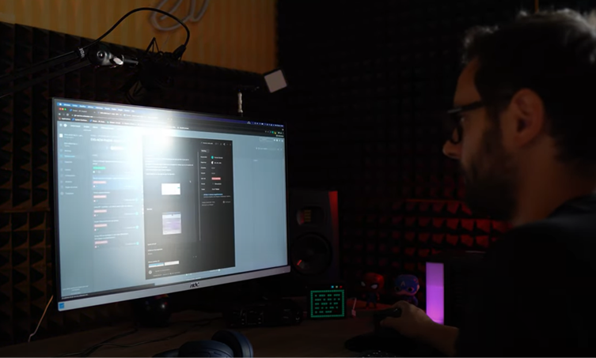
https://www.youtube.com/watch?v=66Qj1jS4g0M
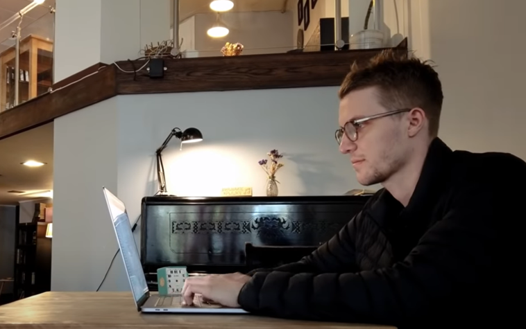
https://www.youtube.com/watch?v=4A9UfnhbMv8
Indeed, these IT developer's routines are the same
as ordinary people, actually in the morning, they also prepared themselves,
took breakfast, and went jogging for a while. As they worked remotely with their
company, so the time would be flexible as well, depending on them and the team.
After, they started to do some specific tasks from their business, including
briefing team projects and coding until the afternoon. Soon, they got a lunch
and took a small break, then went back to work with a particular job;
specifically, re-checking the Jira dashboard, launching the frontend and
backend parts in GitBash, having a check for Jira service-desk list and finally
solving BPM automation flow with Intellij. Before ending the working hours, he
collaborated with his team to check what they had done and help each other with
difficulties. There would be some fun activities and playing sports in the club
himself in the late afternoon to release his stress after a hard-working day.
As I learned from the videos, working remotely like that, they can have a
specific time frame to look for and get some outside projects to obtain more
practical experience and broaden their horizons.
2.
Software
Archetect
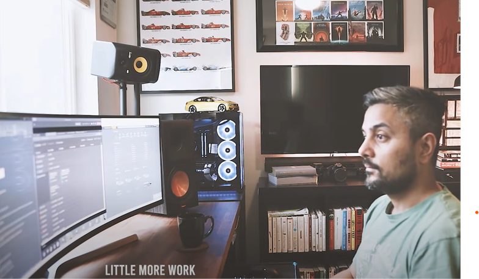
https://www.youtube.com/watch?v=lcw-MkO38sA
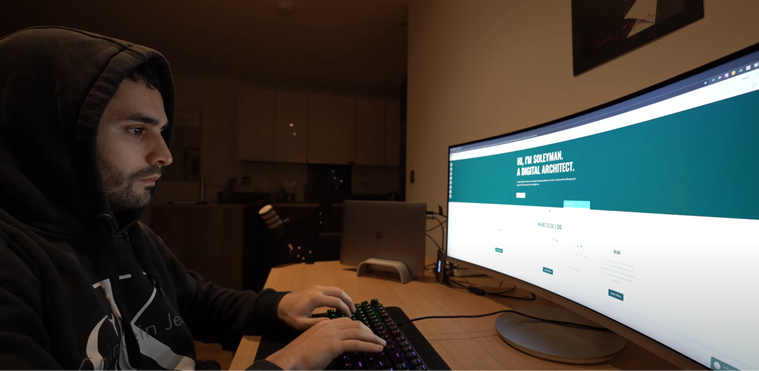
https://www.youtube.com/watch?v=HDzmJG4qs7U
These are the most exciting videos I have watched on
Youtube since they are senior software engineers with experience related to
architecture. The same as previous videos, in the morning they would prepare to
get ready for a new day with some soft exercises and taking breakfast which was
indispensable. After that, they would head to the working room for daily
standup with some small tasks, including checking emails, updating tasks and
status, and reviewing meeting agendas and daily goals. Before heading to their
office, they usually did the code review, which accounted for 60% of time spent
due to their senior experience. After that, they got to their company for doing
the remaining jobs as listed, working on the IDE by adding some lines of codes
to sync up some telemetry. Eventually, ending the working hours, he also
enjoyed some activities himself and his friends to reinvigorate his mind to
wrap up the day.
3.
Website
Developer
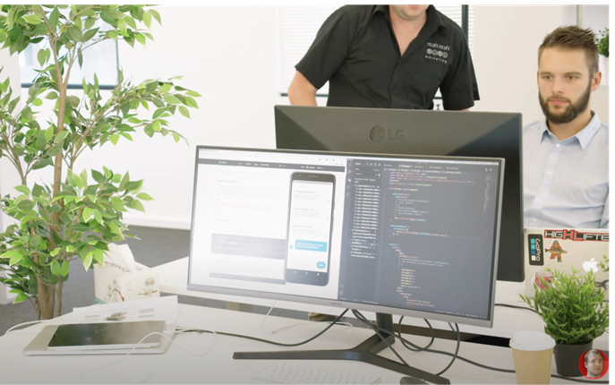
https://www.youtube.com/watch?v=UXrmdS2bLBI
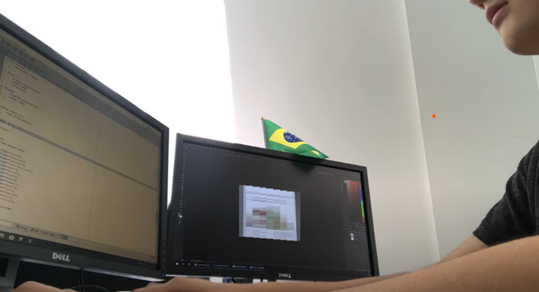
https://www.youtube.com/watch?v=hMgTk1xeVY4
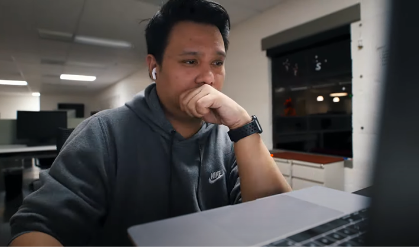
https://www.youtube.com/watch?v=B1WGJoTF5EY
In these videos, they would help me to have a view
on how website developer works. At first, in the morning, they would check the
team updates, company works, and coding reminders, then they took his breakfast
and headed to the company soon. As I have seen, their projects were creating
app features and user interfaces on mobile developments, so their coworkers are
the ones they mostly interacted with. At the same time, they were working
together in a workplace where everyone could ask for help quickly and
collaborate with each other whenever they want. This will help the team get the
best productivity. They also intended to finish off some leftover work at their
office in the evening to end the day's tasks. According to the last video, the
speaker had reported that this kind of position was not stressful as others
suppose, but it also depended on the company that we are working as well. In
addition, in order to enhance and comprehend the coding skills, we have to build
the same things repetitively in different ways and build the harder things to
memorize the functions.
4.
Google
Software Engineer | Work-from-home Edition
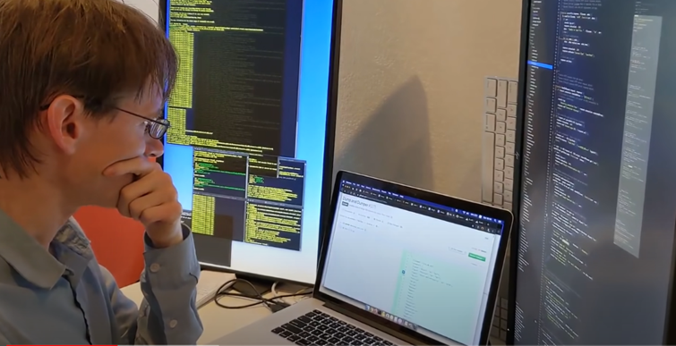
https://www.youtube.com/watch?v=a0glBQXOcl4
He reported to us how a software engineer at Google
works from home in the pandemic of Covid-19. First of all, before doing any
tasks, he would have a check on the pull requests of his teammates and do some
code reviews from his coworkers to fix their mistakes. Besides, researching for
the new knowledge also plays an important part in noticing what exactly needed
to be put in that lines of code. Next, he updated some old codes in his
undertaking projects and added some comment lines so that the other coworkers
could understand. He also said that being a software engineer, there would be a
bunch of different tasks that we have to deal with, from fixing the bugs to
security incidents. Moreover, as an engineer at Google, he had to conduct
interviews for the potential new hires every week. The candidate will answer
some general questions about themselves and their technical skills. Finally,
after his working hours, he opted to spend the rest of the day playing sports and
spending time with his family.
5.
UI
Software Engineer/ Design
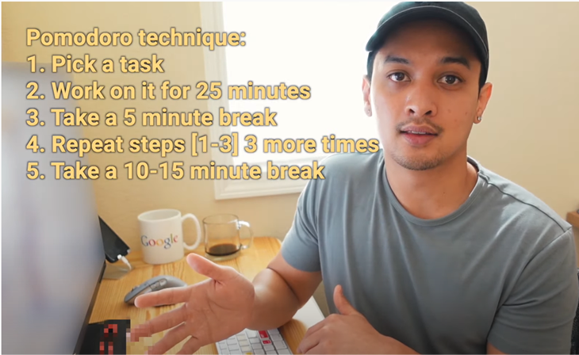
https://www.youtube.com/watch?v=9qIRJZnoeWE
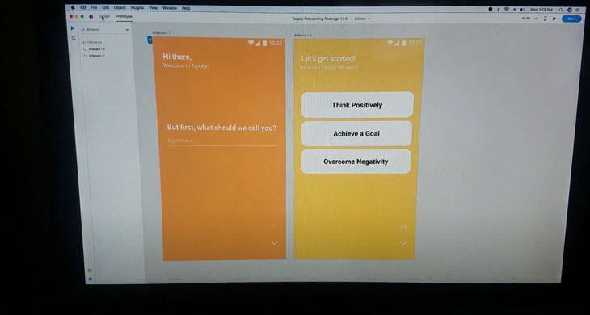
https://www.youtube.com/watch?v=8m4ScZPpFl8
These software engineers would tell me how they work
in building UI design on user interfaces. To begin with, they would check out
and read their working emails to keep up to date with the new information from the
company and replied to all the emails needed. Then, they updated some bugs from
the project and had a look through the work notes to know what should be
completed for that day. The suggested technique I have learned from the first
speaker is to apply in the coding part called the "Pomodoro
Technique", which could bring the highest level of the productivity in
solving the tasks. As the UI designer, they had to solve a great deal of work,
including debugging a performance regression, broken and glitchy animation, and
researching new tools to enhance the animation problems. Besides working with
the other teammates, they must interact with many users as possible so as to
test out their protypes that could help them to recognize complex issues with
their app development. Finally, they chose to spend the evening with friends,
enjoying in some leisure activities.
6.
Cloud
Architect
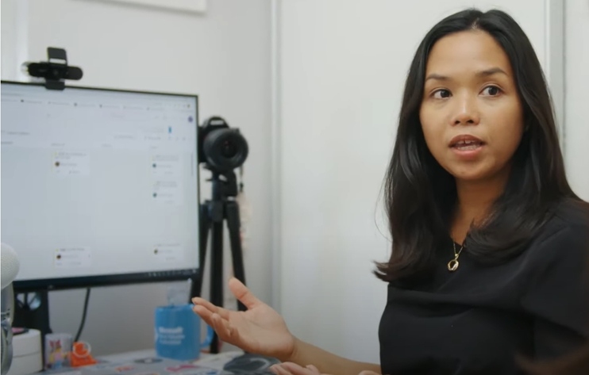
https://www.youtube.com/watch?v=eRx6pFRwVDA
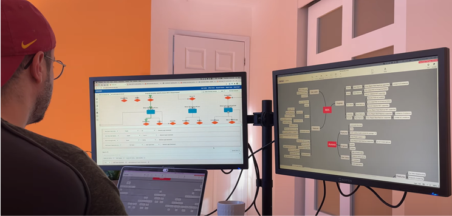
https://www.youtube.com/watch?v=cMY4SpZd_ns&t=3s
These
cloud architects would give me some basic understanding about their working
lifestyles in this major. As the first speaker said that, she would begin her
day with fixing the bugs in the production on the top of backlog with her group
members who she usually interacted. Follwing that, working in cloud
architecture which mainly focuses on breaking down the domain problems into
smaller software components because it would be much straightforward to resolve
the issues in small scale and then make them work together. But how can we make
the small components communicate with each other? She also recommend some tools
with marvellous features to help the projects as well as the similar tasks
called "Azure services", which designed for making the application to
be event-driven. Additionally, there are many necessary task that they had to
complete in a day including writing a blog, reference architecture,
contributing the opensource project, addressing some difficulties for clients
and building the decision trees with RDS and Aurora for chosing the best
service for the given workload. Eventually, spending for personal and family
activities is crucial after a tired day with large amount of work.
Through
these mentioned videos, at first, I would think that a full-stack software
engineer has a very challenging life. However, it turns out that if they have
good time management skills, they will have a very exciting and healthy life
like that. I found that the working routine of these IT professionals is
balanced between the morning and evening.
On the other hand, nothing is straightforward for
everyone, in this position the most challenging aspect would be the debugging
process as each line of code contains the probability of failure. Because
every project is constructed from the initial concept, so single line
of code is new and untested and must be checked carefully. There will be
dozens or thousands, of possible inputs, outputs, states, or connections
to cope with those codes. Other external factors can influence or be influenced
by it. Even if the test cases for those codes could be documented, no one can
be assured that another unknown risk may lead to mistakes. And, since no code
exists on its own, checking a single line of code is still only part of the
problem. It is a component of the larger system, which must be thoroughly
tested to verify that all aspects of the application work properly.
1. A Day In Life Of
A Remote Full Stack Developer 2021, Youtube, 25 June,
CodingAndCaffeine, viewed 21 August 2021, <https://www.youtube.com/watch?v=66Qj1jS4g0M.>.
2. Aaron
Jack 2021, A day in the life of a Remote Software
Developer, Youtube, 15 September, Aaron Jack, view 21 August 2021 <https://www.youtube.com/watch?v=4A9UfnhbMv8.>
3. A Day In The Life
Of A Software Engineer At Microsoft | Expectation vs Reality 2020,
Youtube, 5 July, Engineering with Utsav, viewed 21 August 2021, <https://www.youtube.com/watch?v=lcw-MkO38sA.>
4. Soleyman
Shahir 2021, A Day In The Life Of A
Software Architect, Youtube, 21 February, Soleyman Shahir, viewed 21 August
2021, <https://www.youtube.com/watch?v=HDzmJG4qs7U>.
5. Adrian
Twarog 2020, Day in the Life of a
Software Engineer in Australia, Youtube, 24 November, Adrian Twarog, viewed
21 August 2021, <https://www.youtube.com/watch?v=UXrmdS2bLBI>.
6. Mikey
Tran 2020, A Day in the Life of a Web
Developer in London, Youtube, 10 June, Mikey Tran, viewed 21 August 2021,
<https://www.youtube.com/watch?v=hMgTk1xeVY4.>
7. Chris
Sean 2019, A Day in the Life of a Web
Developer, Youtube, 25 December, Chris Sean, viewed 21 August 2021, < https://www.youtube.com/watch?v=B1WGJoTF5EY>.
8. Neil
Fraser 2020, A day in the life of a
Google Software Engineer | Work-from-home Edition, Youtube, 28 May, Sierra
Nguyen, viewed 21 August 2021, <https://www.youtube.com/watch?v=a0glBQXOcl4.>
9. A Productive Day in the Life of a
Google Software Engineer | Bay Area WFH 2021, Youtube, 9 July,
Jon - Your Friend In Tech, viewed 21 August 2021, <https://www.youtube.com/watch?v=9qIRJZnoeWE.>
10. A Day in the Life of a Software
Engineer | App UI Improvements + Big Announcement 2019,
Youtube, 25 April, Lilly and Mark, viewed 21 August 2021, <https://www.youtube.com/watch?v=8m4ScZPpFl8.>
11. Microsoft
Developer, A Day in a life of a Cloud
Architect | CodeStories, YouTube, 30 November, viewed 21 April 201, <https://youtu.be/eRx6pFRwVDA>.
12. MecaHumArduino, A Day In A Life Of A
Solutions Architect At AWS | WFH Edition, Youtube, 5 March, viewed
23 April 2021, <https://youtu.be/cMY4SpZd_ns>.
13. Straits
Research 2020, 'Top 10 Most Popular Gaming Genres in 2020', Straits Research, blog post, 11 April, viewed 24 August 2021,
<https://straitsresearch.com/blog/top-10-most-popular-gaming-genres-in-2020/.>.